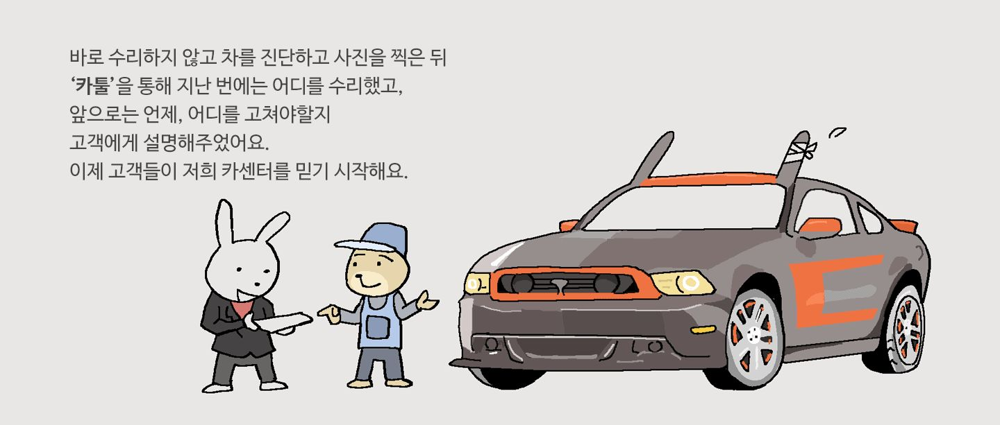
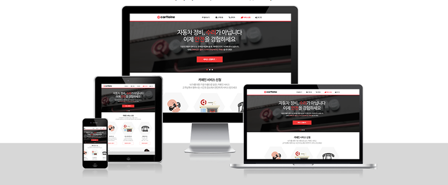

Software Developer
Seoul, South Korea
View the Project on GitHub github.com/oddeveloper
카페인은 자동차 정비 시장을 O2O(온라인과 오프라인의 결합, 융합을 기반으로 하는 비즈니스 모델) 형태로 직영 또는 제휴 맺은 정비소를 거점으로 하여 차량과 관련된 정비와 검사(진단) 및 전반적인 관리를 할 수 있게 도와주는 서비스입니다.
* 차량 픽업 또는 방문 정비: 고객이 카페인과 제휴된 정비소를 통해 키를 맡기거나 또는 직접 방문하여 수리, 검사를 받는 형태의 기능입니다.
온라인에서 제공되었던 기능은 카페인 비회원, 회원이 고객 정보를 입력한 후, 차량을 픽업 혹은 정비소 직접방문 형태로 예약할 수 있는 기능을 제공하였습니다.
* 차량 진단서 관리: 보통 정비소에 차량 수리나 검사가 끝나면 1~2장의 리포트를 받아볼 수 있습니다. 카페인 서비스는 이런 리포트를 소비자가 이해하기 어렵고 수리가 잘 되었을까? 하는 궁금증을 불러일으킬 거라고 생각을 했습니다.
그래서 이런 궁금증과 소비자에게 차량에 대한 서비스가 잘 되었구나! 확신을 주기 위해서 신뢰 있는 정비, 검사내역서를 발급할 수 있는 기능을 개발하였습니다.
* 차량 관리: 내 차는 얼마나 달렸을까? 차 번호가 어떻게 되었지? 차량의 사진도 관리하고 싶다. 이런 기본적인 소비자의 욕구를 충족시켜주기 위해 서비스 가입 고객만 차량 주행속도, 사진, 애칭, 차량 등록번호 등을 관리할 수 있는 기능을 제공하였습니다.
* 정비소 관리: 서비스가 점점 개선되어갈수록, 소비자뿐만 아니라 카페인과 제휴 맺은 정비소의 사장과 정비사 또한 정보가 필요했습니다. 그런 필요성에 정비소의 기본정보와 제공서비스, 서비스 일정 관리, 고객들의 정비소 평가 기능 등을 개발하였습니다.
* 결제관리: 차를 수리하면 보통 현금이나 카드로 결제합니다. 카페인 서비스에서는 2~3개의 PG사를 이용하여 온라인 결제 서비스 기능을 제공하였습니다.
* 안드로이드 모바일 앱: 모바일에서도 차량 예약 서비스, 진단서, 차량, 정비소 평가 등을 할 수 있는 고객기반의 애플리케이션을 제공하였습니다.
카페인이라는 서비스를 만들기 시작한 초기에는 직원 전체가 모여서 서비스에 개념을 잡고 거기에 필요한 기능들을 적어나갔습니다. 그리고 그 기능들의 우선순위와 일정을 정한 다음 개발을 진행하였습니다.
설계는 기술 이사님과 진행하였으며, 인프라는 기술 이사님이, 저는 서비스 영역에서 기능들을 만들어나갔습니다. 초기 개발은 Ruby 2.x, Ruby on Rails 3.x~4.x, Zurb Foundation 5.x, AWS 환경에서 진행했었습니다.
Ruby와 Ruby on Rails를 실무에서 처음 접해보았기 때문에 적응에 어려움도 있었지만, 익숙해지고 나서는 Ruby의 객체지향성, 다중상속, Ruby on Rails에서 제공하는 Gem 등 개발속도를 빠르게 해줄 수 있는 요소들 덕분에 개발에 생산성과 편리성을 느끼게 되었습니다.
또한, 구현이 필요한 소셜 기능이 추가된 회원가입과 로그인, 파일 첨부 기능 부분도 앞서 소개한 Gem을 활용하여 구현되었고 기본 기능에 추가로 필요한 부분만 다시 수정하여 고쳐나갈 수 있었습니다.
하지만, 프로그래밍 과정에서는 전체적으로 빠르지는 않았습니다. Gem을 사용하는 것에 있어서도 어떤 것을 사용해야 하는지에 대한 고민과 비교, 테스트하는 것도 필요했으며 Ruby와 Ruby on Rails를 실제 업무에 사용할 때에 필요한 부분들에 익숙해져 가는 과정이 필요했었습니다.
또한 서버개발보다는 화면개발이나 개발도구 쪽에 좀 어려움을 겪은 경험도 있었는데, 이전까지는 주로 Bootstrap을 약간 사용해 보거나 Html, CSS, Javascript를 기본으로 코딩하는 정도가 전부였기 때문에 Zurb가 만든 Foundation이라는 프레임워크에 적응하는 데는 시간이 좀 걸렸던 것 같습니다.
예를 들자면, Foundation 내부에서 사용된 SCSS, Media Query, Off-Canvas, Ink For Mail Template 등이었습니다. 또한, IDE(Eclipse, Intellij 등)를 주로 사용했었기 때문에 커맨드라인 도구와 Vim에 익숙해지는데, 어느 정도 시간을 투자하면서 개발해 나가야 했었습니다.
그리고 개발 초기에는 국내보다는 국외를 목표로 서비스를 개발해 나갔었습니다.그렇기 때문에 테스트나, 사용성, 유지보수에서는 해외시장에서의 투자를 목표로 했기 때문에 가벼운 프로토타이핑 형태로 서비스가 구현되었으며, 다 같이 테스트하면서 피드백을 주고받으며 고쳐가는 형태로 개선해 나갈 수 있었습니다.

그리고 이러한 결과로 Qualcomm Q prize 국내 지역 대회에서 1위, 세계 3위를 수상할 수 있었습니다. 비록 짧은 기간과 여러 시도 끝에 만들었던 프로토타입이었지만, 수상을 할 수 있었다는 것과 시장에서 충분히 가능성이 있는 서비스를 만들 수 있다는 것에 긍정적인 자세를 가질 수 있었습니다.
개발과 관련해서는 대체적으로 처음 사용하는 기술들이 많았기 때문에 어려움도 있었지만, github의 issue나 stackoverflow, 해당 기술들의 document 등을 중점적으로 보면서 문제를 해결해 나갈 수 있었기 때문에 개발업무에 적응해나갈 수 있었습니다.
또한, 초기 개발했을 때에는 어떤 고객에게 서비스로부터 어떤 기능을 제공할 것인지를 고민하는 부분이 가장 어려웠던 것 같습니다. 결국, 개발자가 개발만 잘해야하는 것이 아니라 팀원들과의 의사소통능력, 사용자의 입장이 되어 기능을 만들어 나가고 개선해 나갈 수 있는 자질도 중요하다는 점을 얻을 수 있었습니다.
이 시기에는 직영 정비소에 운영되고 있는 소프트웨어가 있었는데, 그 서비스를 분석하고 카페인 서비스에 어떻게 담아내야 할지 고민했었습니다. 또한, 회사가 투자를 받고 일부 인력을 충원함으로써 국외에 출시된 서비스를 국내에 맞게 변형하는 작업이 필요했습니다.
정비소에 운영되고 있는 소프트웨어는 차량을 검사 또는 정비한 내용을 정비사가 수리한 부분을 사진을 찍어 올리고 글로 차량에 대해 소견을 입력하여 이력을 저장 및 관리하고 정비샵의 전체적인 기능을 담당하는 통합서비스라고 할 수 있었습니다.
저는 이런 서비스가 실제 정비소에서 어떻게 운영되는지 보기 위해서 일주일 동안 출퇴근하였고, 실제 이 소프트웨어를 만드신 정비 이사님과 이야기하면서 많은 부분을 알아갈 수 있었습니다.
그리고 이러한 경험들을 바탕으로 기획자분과 개발팀, 경영진 사이에서 우선순위를 정한 뒤 국내 서비스에 적용될 픽업 및 방문 예약 서비스와 PDF 기반의 정비, 검사내역서 발급, PG사를 통한 결제 기능을 개발하였습니다.
위 기능 중 예약서비스는 기획자와 협의하고 개발했음에도 정비소가 일정 시간 동안 입고 가능한 차량 수가 제한되어야 한다는 점을 간과했었습니다. 그리고 이에 따른 문제가 발생했을 때 정비와 서비스를 담당하는 직원분들의 피드백 덕분에 서비스를 개선해 나갈 수 있었으며, 추후 일, 시간별 제약에 따른 예약시스템과 정비사에게 보여줄 정비 일정 관리 기능을 만들어나갈 수 있었습니다.
또한 정비소에서 차량정비내역이 온라인에 저장 및 관리되어 사용 되는 소프트웨어와 예약서비스를 담당하는 카페인 서비스 사이에 데이터 공유가 필요한 이슈가 있었지만, 데이터의 관계와 정합성 문제가 컸던 관계로 단계적으로 끊어나가는 작업을 세워서 진행해 나갔습니다. 이런 이슈로 초기에는 차량 정비, 검사내역서가 PDF로 발급되어 나갔습니다.
서비스가 국내로 이전되고 새로운 기능이 추가되어갔을 때, 어려웠던 점은 초기에 만들었던 국외 기반 서비스가 국내 차량 관리 기준과는 조금 달랐기 때문에 설계작업에 조금 시간이 걸렸었습니다.
그리고 기능을 개발했음에도 실제 오프라인 환경에서 사용되는 업무절차에 예외적인 부분이 많았기 때문에 이러한 문제를 해결해 나가는 것에 있어서 담당자와 많은 이야기를 나누면서 개편해 나가야 했습니다.
흥미로웠던 부분은 정비소에 운영되고 있는 소프트웨어가 고객에게 얼마나 신뢰 있는 서비스를 제공해 주고 있는지를 현장에서 직접 경험해 볼 수 있었습니다. 단순히 1~2장의 리포트보다 정비사가 수리한 부분을 직접 찍고 해당하는 부분에 소견을 달아 고객에게 직접 보여주고 설명해주는 장면은 마치 병원에서 환자가 의사에게 진료를 받는 것처럼 신뢰도가 형성되는 느낌을 받았었습니다.
그리고 후임개발자를 충원함으로써 일을 나누고 소통하는 방식을 회의 혹은 github의 issue, pull request 기능 등으로 진행 해나갈 수 있었기 때문에 개발의 진행사항이나 문제를 전체적을 관리하기는 어렵지 않았지만, 의사소통이나 개발방식의 차이에서 약간의 어려움도 겪었으며 선배개발자보다 후배개발자와 일을 하는 과정에서 제 자신이 개발해왔던 방식과 생각들에 부족한 부분도 많이 깨달을 수 있었습니다.
정비소에서 사용되고 있는 소프트웨어의 기능을 카페인 서비스로 점차 이전하고자 시도하는 시기였습니다. 개발자가 3명 더 추가되었으며, 특정 기간에는 서버 개발부서 팀원들을 끌고 가는 역할도 맡게 되었었습니다.
그리고 서비스와 관련해서는 차량 리포트 고도화, 정비샵 관리 서비스 기능 개편을 팀원들에게 업무분배 및 관리 모바일 앱을 위한 서버 API 개발, Rspec을 통한 기능 테스트와 일부 인프라 운영을 담당하게 되었습니다.
그리고 개발에 필요한 요소들이 생겨날 때마다 마케팅이나 기획 부서들과 종종 협의하면서 시스템에 부가적인 (홍보, 이벤트) 기능 들을 추가하는 작업도 맡게 되었었습니다.
이 시기에서 가장 어려웠던 점이라면, 기존에 완전하게 병합작업을 하지 못했던 정비소 내의 소프트웨어 데이터 이슈였습니다. 고객의 차량 리포트를 고도화하고 결제기능을 맞춰나가기 위해서는 실제 오프라인과 온라인상의 데이터가 어느 정도 공유되었어야 했는데 그 부분에 대한 처리가 조금은 미흡하여 문제가 발생했었습니다.
이 부분은 오프라인상의 서비스가 흘러가는 절차가 명확해야 했지만, 간혹 예기치 못한 일들이 발생하였기에 관련 담당자들과 오랜 시간 고민하고 조금씩 개선해 나갈 수밖에 없었습니다.
또한 개발팀원들을 관리하는 과정에서 각자에게 맡겨진 업무를 진행하는 방식이 조금씩 달랐기 때문에 누군가에게는 조금 강하게 업무를 시키는 방식을 시도함으로써 어려움을 겪기도 했었습니다. 이러한 어려움은 다른 부서의 팀원들에게 가끔 있었으며, 제가 해결할 수 있는 방식은 시간이 들더라도 문제에 대해서 온라인에서는 slack으로 오프라인에서는 차 마시는 시간을 가지면서 공유하고 합의점을 찾아 해결하는 방법을 시도했었습니다.
흥미롭고 새로 배웠던 부분이라면 개발에서 인프라 쪽으로도 조금씩 업무를 경험해보니 실제 서비스가 개발되고 운영되기까지의 과정이 쉽지는 않다는 것을 알 수 있었습니다. 비록 점점 쉽게 개발할 수 있도록 기술이 좋아지더라도 그것을 다루는 사람이 그것을 자세히 알지 못하고 적용한다면, 서비스에 얼마나 치명적이고 문제가 되는지 알 수 있었기 때문입니다.
그리고 이러한 경험을 서비스에 background job을 적용하는 과정에서 Ruby on Rails에서 제공하는 sidekiq gem을 추가함으로써 여러 시행착오를 겪을 수 있었습니다. 또한, 이전까지는 후임 개발자들과 같이 개발을 했었지 끌고 가본 적이 없었기 때문에 실제로 저 자신이 이러한 역할을 맡았을 때의 장단점을 알아갈 수 있는 시간이었습니다.
장점이었다면, 팀 안에서 어느 한 사람이 뛰어나거나 주도적으로 일을 진행하게 하기보다는 서로 간의 합의가 되어 진행할 수 있도록 중재하는 노력을 했으며, 이러한 부분에서 드러난 단점으로는 팀원 각자에게 이야기를 갖는 시간을 많이 소모하게되니 제 자신에 대한 업무능률이나 생산성이 떨어지는 경험을 할 수 있었습니다.

카페인이라는 서비스를 초기부터 기획하고 설계, 개발부터 운영까지 다양한 성격의 사람들을 만나고 하나의 목표로 만들어왔었습니다.비록 지금은 서비스되고 있지 않지만, 무엇보다 자동차 정비업계에서 혁신을 불러일으킬 만한 서비스를 개발해왔다고 자부하고 있습니다.
새로운 기술을 접하고 다양한 사람들을 만나 서비스를 만들어가기까지 저 자신의 장단점을 느낄 수 있는 소중한 시간이었습니다.